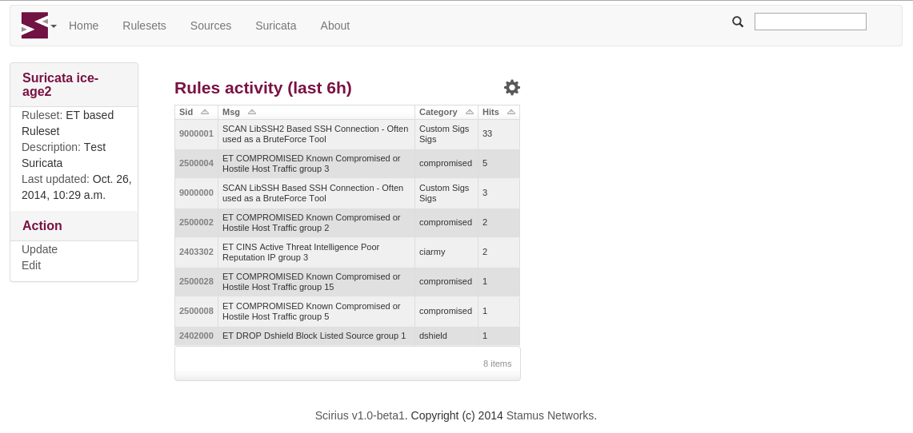
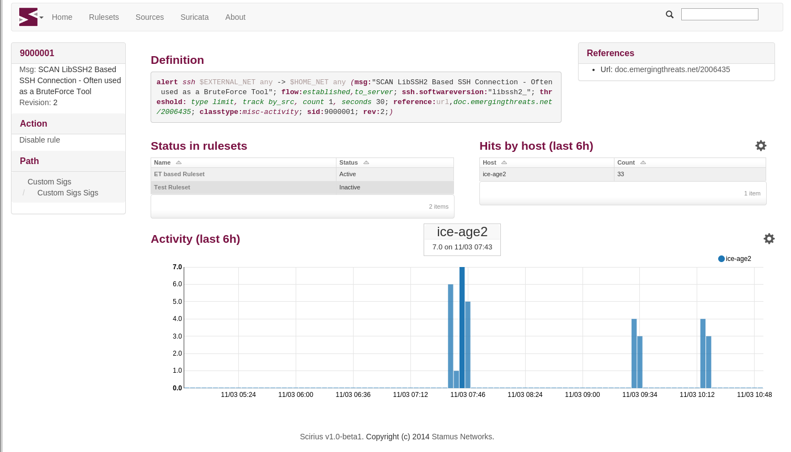
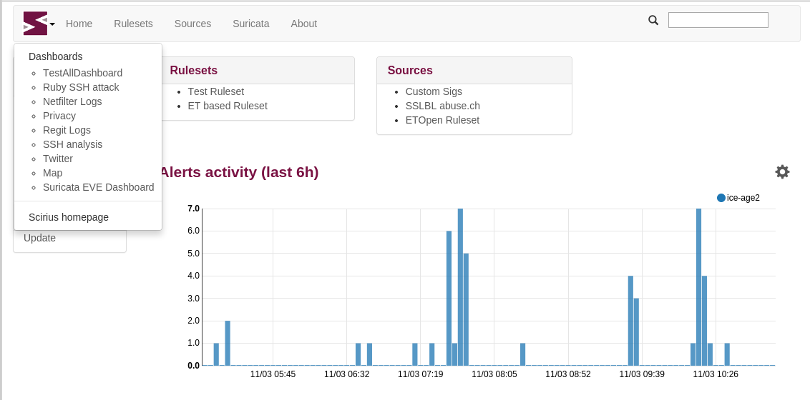

Installation and setup¶
Installing Scirius CE¶
Scirius CE is an application written in Django. It requires at least Django 1.11 and has not yet support for Django 2.0.
Scirius CE also uses webpack to build CSS and JS bundles.
Dependencies¶
The easy way to install the dependencies is to use pip:
On Debian, you can run
aptitude install python-pip python-dev
You can then install django and the dependencies
pip install -r requirements.txt
To use the suri_reloader script which is handling suricata restart, you will also need pyinotify
pip install pyinotify
It has been reported that on some Debian system forcing a recent GitPython is required
pip install gitpython==0.3.1-beta2
You will also potentially needs the gitdb module
pip install gitdb
For npm and webpack, you need a stable version of npm and webpack version 3.11. On Debian you can do
sudo apt-get install npm
sudo npm install -g npm@latest webpack@3.11
npm install
cd hunt
npm install
npm run build
Running Scirius CE¶
From inside the source directory, you can initiate Django database
python manage.py migrate
Authentication is by default in scirius so you will need to create a superuser account
python manage.py createsuperuser
Before starting the application you need to construct the bundles by running webpack and collect static files:
webpack
python manage.py collectstatic
This step as to be done after each code update.
One of the easiest way to try Scirius CE is to run the Django test server
python manage.py runserver
You can then connect to localhost:8000.
If you need the application to listen to a reachable address, you can run something like
python manage.py runserver 192.168.1.1:8000
Suricata setup¶
Scirius CE is generating one single rules files with all activated rules. When editing the Suricata object, you have to setup the directory where you want this file to be generated and the associated files of the ruleset to be copied.
Scirius CE won’t touch your Suricata configuration file aka suricata.yaml. So you have
to update it to point to the directory where data are setup by Scirius CE. If you are
only using rules generated by Scirius CE, you should have something looking like in
your suricata.yaml file
default-rule-path: /path/to/rules
rule-files:
- scirius.rules
To use the Use IP reputation instead of group feature you also need to have
reputation-categories-file: /path/to/rules/scirius-categories.txt
default-reputation-path: /path/to/rules
reputation-files:
- scirius-iprep.list
To interact with Scirius CE, you need to detect when /path/to/rules/scirius.reload file
are created, initiate a reload or restart of Suricata when it is the case and delete the
reload file once this is done.
One possible way to do that is to use suri_reloader available in suricata/scripts
directory. The syntax of suri_reloader can be something similar to
suri_reloader -p /path/to/rules -l /var/log/suri-reload.log -D
Use -h option to get the complete list of options. Please note that suri_reloaded
uses the service command to restart or reload Suricata. This means you need a init
script to get it working.
Link with Elasticsearch¶
If you are using Suricata with Eve logging and Elasticsearch, you can get information about signatures displayed in the page showing information about Suricata:
You can also get graph and details about a specific rule:
To setup Elasticsearch connection, you can edit settings.py or create a
local_settings.py file under scirius directory to setup the feature.
Elasticsearch is activated if a variable names USE_ELASTICSEARCH is set
to True in settings.py. The address of the Elasticsearch is stored in the
ELASTICSEARCH_ADDRESS variable and uses the format IP:port.
For example, if your Elasticsearch is running locally, you can add
to local_settings.py
USE_ELASTICSEARCH = True
ELASTICSEARCH_ADDRESS = "127.0.0.1:9200"
Please note, that the name of the Suricata (set during edition of the object) must
be equal to the host key present in Elasticsearch events. It can also be edited here: scirius -> suricata -> edit.
On logstash side, the only necessary thing is to make sure that the @timestamp is equal to the timestamp value provided in Suricata events. To do so and if you Suricata events are of type SELKS on can use
filter {
if [type] == "SELKS" {
date {
match => [ "timestamp", "ISO8601" ]
}
}
}
This is necessary to avoid glitch in the graphics generated by Scirius CE.
Link with Kibana¶
If you are using Kibana, it is possible to get links to your dashboards by clicking the top left icon:
To activate the feature, you need to edit your local_settings.py file:
KIBANA_URL = "http://localhost/"
USE_KIBANA = True